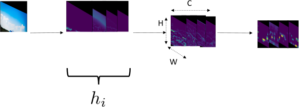
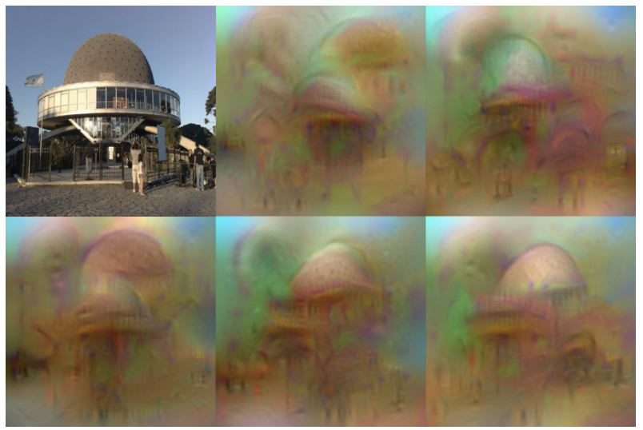

class: center, middle, title-slide count: false # Opening the black box <br/><br/> .bold[Marc Lelarge] .citation.tiny[ With slides from A. Sablayrolles] --- # How do we make sure that our model works? How do we make sure that our model works ? - We can look at its performance on a validation set - We will know that it works, but not how -- It is important to understand how our models work, in particular for: - debugging our training code / algorithm - getting ideas on how to improve the model - be compliant with regulations if our model is used in production - using pre-trained models for a new task (transfer learning) --- # Looking at network activations Basic idea: ReLU represent how useful the signal is: - if a ReLU is activated (> 0), the signal useful to predict the class - if a ReLU is not activated (< 0), the signal is useless .center[] .citation[Credit: Alexandre Sablayrolles] --- # Visualization of activations We can run t-sne on the last activation of the neural net. .center[<img src="images/blackbox/cnn_embed_full_1k.jpg" style="width: 450px;" />] <br/> <br/> .citation[Credit: A. Karpathy [t-SNE visualization of CNN codes](https://cs.stanford.edu/people/karpathy/cnnembed/)] --- # Class Activation Mapping .center[<img src="images/blackbox/CAM.png" style="width: 750px;" />] from [Learning Deep Features for Discriminative Localization](http://cnnlocalization.csail.mit.edu/) <br/> <br/> .citation[Practical example: [Notebook](https://github.com/mlelarge/dataflowr/blob/master/CEA_EDF_INRIA/CAM_colab.ipynb) ] --- # Inverting deep image representations .center[] from [Understanding Deep Image Representations by Inverting Them](https://www.cv-foundation.org/openaccess/content_cvpr_2015/html/Mahendran_Understanding_Deep_Image_2015_CVPR_paper.html) <br/> For a given image, take the 1,000-dimensional vector at the end of the network and starting from random noise, learn an image with the same 1,000-dimensional code (while the network weights are frozen). All images above are equivalent from the viewpoint of the network. --- class: end-slide, center count: false The end.